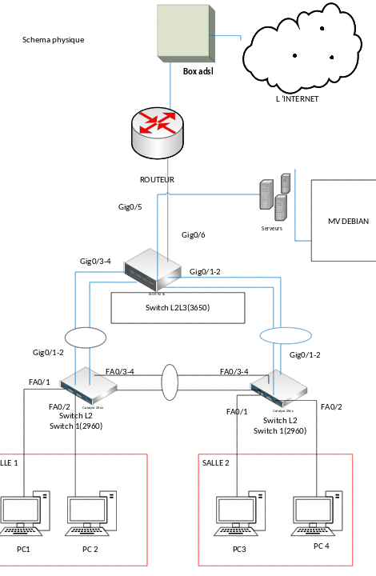

SAÉ 1.2 : S'initier aux réseaux informatiques
Contexte et cahier des charges
Ce projet s'inscrit dans le cadre de la refonte et de l'évolution de l'infrastructure réseau et système de la société Fibre&Company, exigeant le déploiement d'un réseau local (LAN) multi-sites sécurisé, segmenté et hautement disponible. Le cahier des charges imposait une sectorisation rigoureuse du trafic à travers la mise en œuvre de plusieurs VLANs métiers et d'un VLAN natif de sécurité, l'optimisation des liaisons par l'agrégation de liens (EtherChannel) et le protocole RSTP, ainsi que la configuration du routage inter-VLAN et statique sur un routeur Cisco 2911. En parallèle, le volet système exigeait le déploiement d'un serveur Debian virtualisé sous l'hyperviseur Proxmox, configuré exclusivement en ligne de commande (CLI), devant héberger des services clés (Apache2, Bind9, SMB) tout en respectant de strictes contraintes de sécurité préconisées par l'ANSSI et des mécanismes de sauvegarde incrémentale basés sur le système de fichiers XFS.
Vocabulaire technique utilisé
- RSTP (Rapid Spanning Tree Protocol) : Protocole réseau de niveau 2 permettant de cartographier une topologie physique contenant des boucles afin de bloquer les ports redondants, évitant ainsi les tempêtes de broadcast tout en assurant une convergence ultra-rapide en cas de panne d'un lien.
- Agrégation de liens (EtherChannel / LACP) : Technique consistant à regrouper plusieurs liaisons physiques entre deux commutateurs en un seul lien logique unique, permettant d'augmenter la bande passante globale et d'offrir une redondance matérielle transparente.
- Routage Inter-VLAN : Configuration permettant à des terminaux situés dans des réseaux virtuels (VLANs) distincts et isolés de communiquer entre eux en passant par un équipement de niveau 3 (routeur ou commutateur de niveau 3) qui valide et oriente les flux.
- Permissions avancées (SGID / Sticky Bit) : Droits d'accès spécifiques sous Linux permettant de forcer l'héritage du groupe de travail sur tous les fichiers créés dans un répertoire (SGID) ou de restreindre la suppression d'un fichier au seul utilisateur qui l'a créé (Sticky Bit), indispensable pour la sécurité des dossiers partagés.
Méthodologie
1. Préparation, analyse et modélisation de la topologie
Après avoir analysé le cahier des charges, réparti nos rôles et entamé notre première ébauche de la topologie physique sous Visio, ce schéma s'est révélé non conforme aux normes professionnelles car il adoptait une approche abstraite sans spécifier la numérotation des ports ni la distinction des interfaces, un échec de modélisation doublé d'une mauvaise gestion de notre temps puisque les délais impartis pour chaque tâche n'ont pas été respectés, ce qui démontre que nous aurions dû mieux maîtriser notre calendrier et travailler dès le départ sur un logiciel de simulation adapté comme Cisco Packet Tracer afin de disposer d'une véritable interface matérielle photoréaliste.

2. Configuration de l'infrastructure de commutation (SWR-1, SW1, SW2)
Pour segmenter et optimiser la commutation, nous avons créé les VLANs, configuré les SVI et activé les pools DHCP sur le commutateur de cœur SWR-1, assigné les ports en mode d'accès ou trunk sur les commutateurs SW1 et SW2, puis forcé le protocole RSTP comme pont racine et déployé des agrégations de liens EtherChannel via LACP pour garantir la haute disponibilité et accroître la bande passante.
3. Routage IP et interconnexion (Routeur Cisco 2911)
Bien que nous ayons configuré les interfaces LAN en /30 et WAN du routeur Cisco 2911, l'infrastructure a souffert d'un problème d'interconnexion critique en raison de l'oubli de la route statique vers le réseau du serveur, ce qui rendait ce dernier totalement injoignable car un routeur est incapable de transférer ou d'aiguiller des paquets réseau s'il ne possède pas explicitement le chemin de destination dans sa table de routage, un dysfonctionnement technique majeur que nous aurions impérativement dû détecter en effectuant des tests de connectivité complets en amont de notre présentation si le manque de temps ne nous avait pas empêchés de le faire.

4. Déploiement et partitionnement de l'environnement virtuel (Proxmox & VM Debian)
Pour installer notre socle système, nous avons déployé une machine virtuelle Debian sous l'hyperviseur Proxmox, configuré sa carte réseau dans le VLAN 200 dédié aux serveurs, et réalisé un partitionnement rigoureux de ses quatre disques distincts sous le système de fichiers XFS afin d'optimiser la sécurité et la résilience des données stockées.
5. Installation et configuration des services applicatifs et système
En travaillant exclusivement en ligne de commande, nous avons automatisé la création non interactive des comptes utilisateurs grâce à la commande newusers, puis installé et paramétré les services indispensables à l'entreprise à savoir Samba pour le partage de fichiers, Apache2 pour l'intranet, Bind9 pour le cache DNS, ainsi que les serveurs TFTP et SSH pour la gestion de l'infrastructure.
6. Application des politiques de sécurité et de durcissement (Cisco & Linux)
Conformément aux exigences de durcissement, nous avons banni les accès en texte clair comme Telnet ou HTTP, procédé à l'extinction administrative des ports inutilisés des commutateurs en les isolant dans le VLAN 696 avec les protections port-security et storm-control, et renforcé l'accès au serveur en activant une authentification exclusive par paires de clés SSH.
7. Recette technique et validation de l'infrastructure
Lors de la phase finale de validation, notre recette technique a révélé un problème méthodologique majeur puisque chaque membre de l'équipe a uniquement testé sa propre partie de manière isolée sans que nous n'ayons jamais éprouvé tous ensemble le fonctionnement global de l'ensemble des configurations réunies, une erreur d'intégration que nous aurions dû éviter en mettant en place, comme solution, une phase de tests collectifs et transversaux pour garantir la parfaite cohérence de l'infrastructure finale.